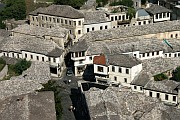
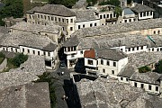

Disclaimer: These pages are not actively maintained, and some of the practical information on the site is out of date. I am working on a new version of the site that will focus more on my photos and memories of travel in Southeast Europe, and less on practical details that too easily become obsolete. In the meantime, please treat the information here with caution.
Albania :: Introduction
Albania's twentieth century history has given it a unique place in the Balkan travel landscape. While Yugoslavia and Bulgaria were building seaside resorts to attract hard-currency tourists, Albania's paranoid Communist regime made it almost impossible for foreigners to enter the country. Although the current authorities still don't do much to promote the country to visitors, Albania is a very different place these days: entry formalities are minimal and foreigners can wander around the country in freedom. Tourist (and other) infrastructure is still rather undeveloped, but visitors who don't mind a few bumpy roads and the odd power cut can discover a rich variety of attractions while observing one of Europe's fastest changing countries.
Where to go: some suggestions
Starting at the very south of the country, the ruined Roman city of Butrint is located between the Greek border and the popular resort of Saranda. The ruins themselves are impressive, and derive added appeal from their location on a peninsula covered with lush woodland. The surrounding hills, marshes, and lagoons form the scenic Butrint National Park, which is well worth exploring. The National Park has designed several walking trails starting from the ruins (see the links page for more details). Butrint is the only place in Albania where this kind of information is so readily available, so take advantage of it. Butrint can be visited on excursions from Corfu, so many people get their first (rather rushed) taste of Albania here.
A short distance inland from Saranda is Gjirokastra, one of the most distinctive historic towns in the Balkans. Spread out over several ridges overlooking the Drinos River, and dominated by an imposing castle, is a collection of houses that at first appears typical of Balkan domestic architecture, but on close inspection reveals many unique touches. Seen from the citadel, the grey slate rooftops below seem almost like an organic feature of the countryside.
The Ionian coast north of Saranda is sometimes called the Albanian Riviera, but this may give a misleading impression as it is still relatively undeveloped. With its quiet beaches, plunging mountains, hill villages, and Greek churches, this stretch of coastline has an appeal to match anything further north on the Adriatic. The Riviera reaches a thrilling climax at the Llogaraja Pass, where the road climbs more than a thousand metres to a wonderful viewpoint before plunging into deep forest on the other side of the pass.
Further inland, and within a few hours of the capital Tirana, is Berati, another well-preserved Ottoman town spreading over several hills and overlooked by a citadel. Berati has an appealing lived-in feel; even the upper town, within the walls of the citadel, is still inhabited. This gives the place a feeling of continuity, rather than the museum-life feeling that pervades some other Ottoman towns in the Balkans. The upper town has always had a strong Christian presence and there are a number of impressive churches. One of them holds a collection of icons by the 16th-century painter Onufri. The town blends into the fertile surrounding valleys, and even in the centre many streets have a canopy of vines, heavy with delicious-looking grapes in August.
Tirana is a mostly modern city that lacks the historical or architectural appeal of Berati or Gjirokastra. Although it doesn't have many "must-see" attractions, I found it a charming city with a distinctive character of its own. If you are travelling around Albania it's well worth a stop for some cafe life and people-watching.
The northern half of the country is less explored by foreigners (not that the south is exactly overrun with tourists), but contains some of the country's most dramatic mountain scenery. A possible starting point for exploring this area is the city of Shkodra. Although its seriously dilapidated concrete blocks can be offputting at first, a hilltop castle, a handful of picturesquely decaying old houses and an army of cyclists give the city a quirky personality of its own.
Practicalities
Transport
Albania does have a train system, but it is slow, covers a limited number of places, and there are only a couple of daily trains on most routes. Most people get around the country using buses or minibuses known as furgons. The system is rather less formal than in most European countries - a "bus station" is normally an area of waste ground rather than a building with timetables and facilities, and you are unlikely to ever see a paper ticket. Nevertheless it all works quite well and getting around by public transport is not a major problem. Buses often have fixed timetables, but furgon drivers generally shout out their destination until they have collected enough passengers to leave. Bus and furgon activity starts very early in the morning and can finish quite early in the afternoon on many routes.
Albania is not a large country, but the mountainous terrain and poor road conditions on certain routes can make for relatively long journey times. A bus from Tirana to Saranda, for example, takes eight or nine hours. In contrast the trip from Tirana to Shkodra, through flat country on a relatively good road, takes only a couple of hours.
When travelling by taxi, don't ask the driver to turn on the meter - there isn't one. Ever. Not even in Tirana. As an alternative to public transport, hiring a taxi for a day or half day can be quite reasonable, especially if there are a few of you.
Albania is the only Balkan country with no international passenger train connections (rumours of a link to Montenegro have not yet become reality). There are good bus connections to Thessaloniki, Athens, and other places in Greece - these are widely advertised in Tirana and other Albanian cities. Regular buses from Tirana also run to Kosovo and Macedonia. It is quite easy to get to Montenegro from the northern city of Shkodra - see the FAQ for details. There is a useful short ferry connection between Saranda and the Greek island of Corfu, as well as longer ferry trips from Durrësi and Vlora to Italy. International flights to Tirana are quite limited and can be expensive, although British Airways sometimes have quite reasonable fares from London.
Money
Some travellers worry about the availability of international ATMs in Albania, but I had no problem relying on cash machines in summer 2006. Medium-sized towns like Berati and Gjirokastra have several, and even the small resort of Himara has one. Services such as transport, and locally produced goods such as the abundant and very tasty fruit, are usually very cheap; shops also stock quite a lot of more expensive imported products.
Albania's currency unit is the Lek. The way Albanians describe amounts of money takes a little getting used to. A shopkeeper telling you that your bill is 600 lek, for example, might say "six hundred" (or the Albanian equivalent, naturally). But he is more likely to say "six thousand", meaning 6000 old lek - even though the old lek was abolished decades ago, quite possibly before the shopkeeper was born. Or he may just say "six". This can be a confusing until you get a feel for how much things cost - especially as prices are often not written down anywhere. Fortunately you will normally be put right (with some amusement) if you attempt to offer ten times the correct amount.
Language
Like most European languages Albanian belongs to the Indo-European language family, but in a separate branch from any other language. You may notice variations in the spelling of some place names, e.g. Tirana/Tiranë, Berati/Berat. This is because the form used in Albanian depends on the grammatical context. Italian is a popular second language and speaking it will certainly smooth your way; Greek could also be useful in some parts of the country. Knowledge of English is fairly limited outside Tirana, although schoolchildren sometimes make brave efforts to speak it. Hotels typically seem to have at least one staff member with a little English, and most people are willing to help out with sign language if necessary.

 
